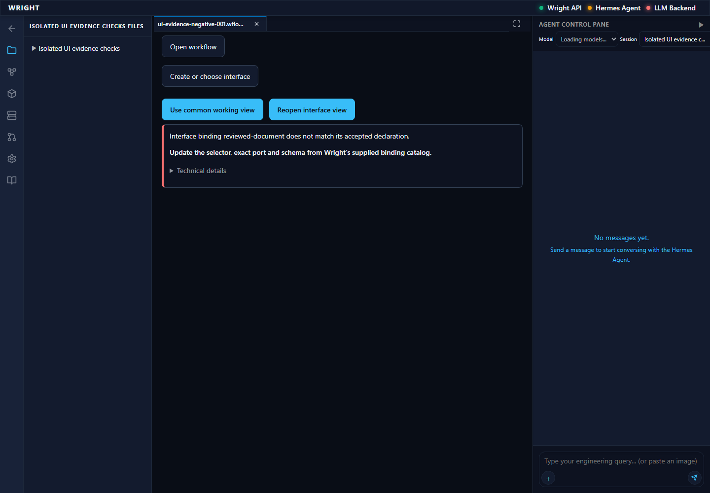
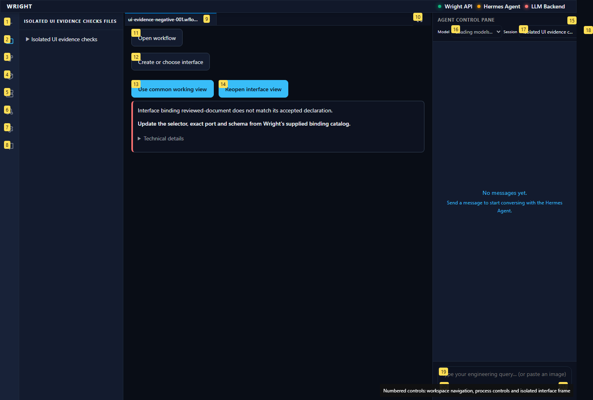
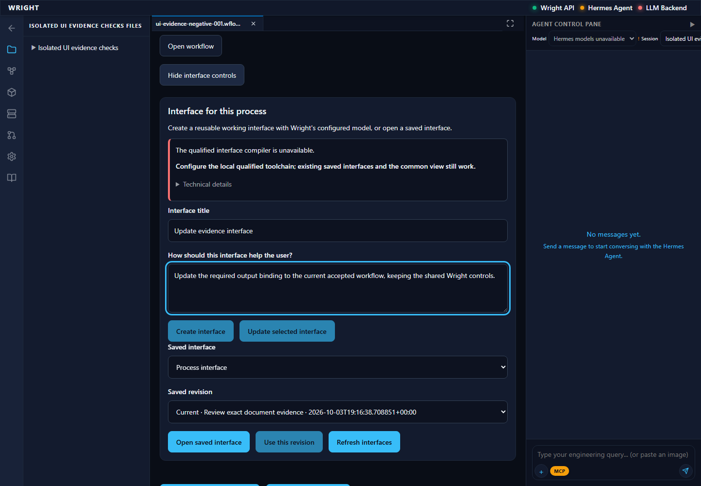
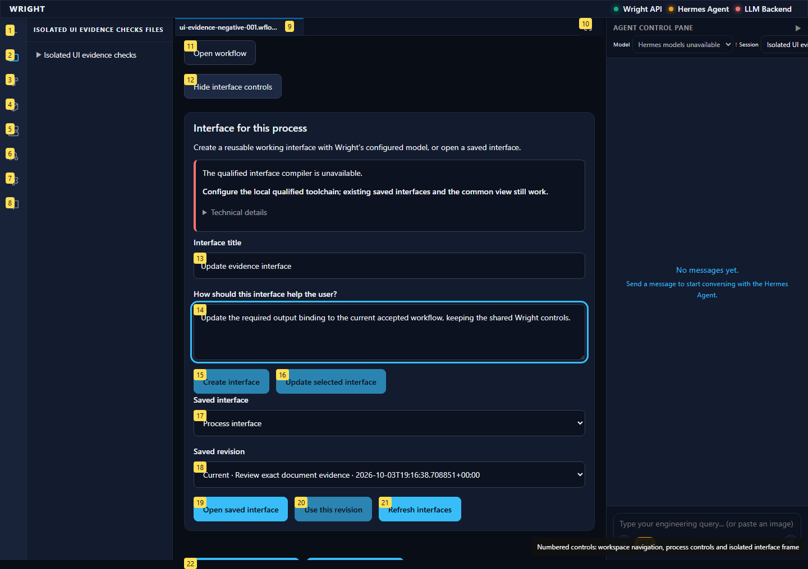
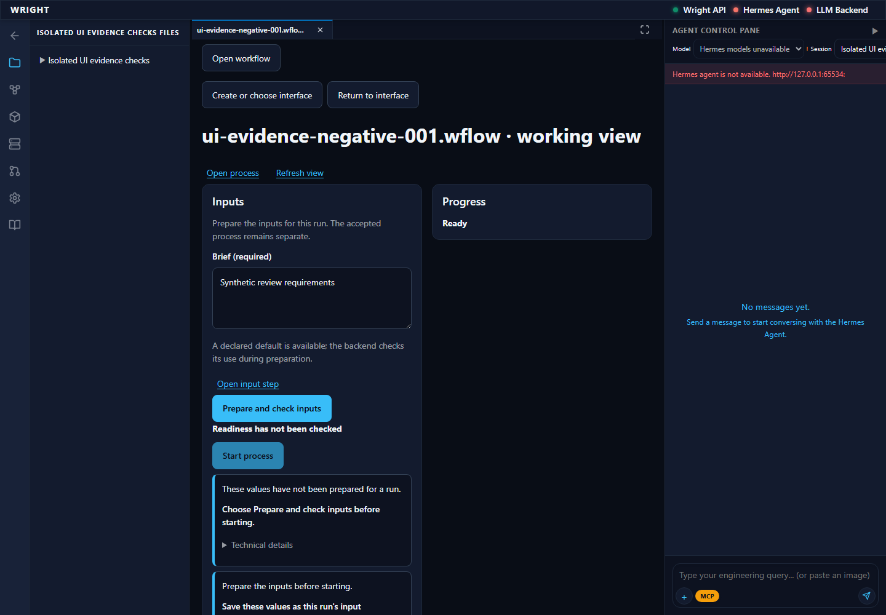
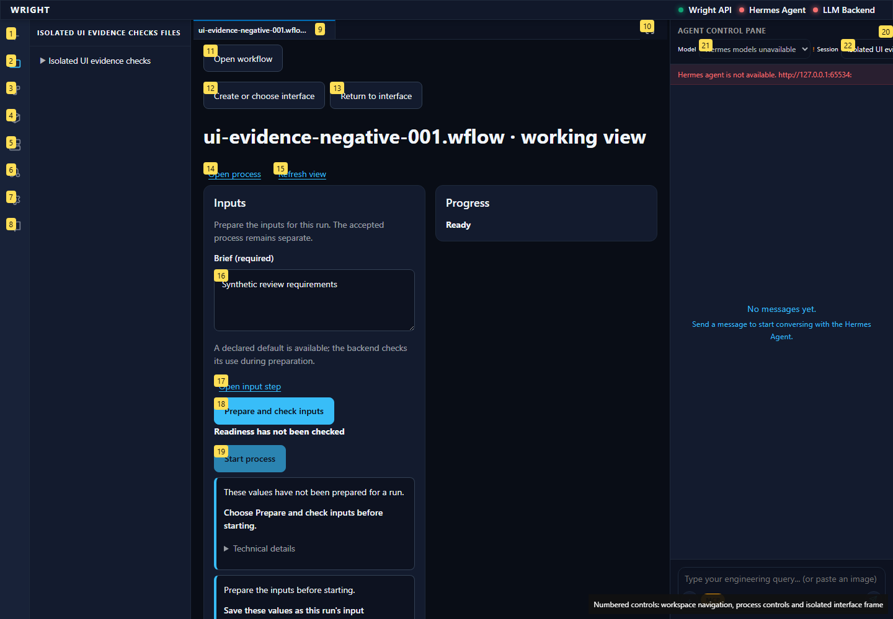

Focused supplemental installed proof: required binding mismatch is contained; complete authoring form stays disabled for explicit resource absence; common fallback visibly exposes current input without old run/review authority. Source restores through exact CAS; no execution or decision.
pass
The same immutable saved UI is contained for this incompatible accepted revision.
Expected: No frame; exact binding reason and fallback
Actual: The same immutable saved UI is contained for this incompatible accepted revision.


The old saved revision is selected and title/instructions supplied; explicit compiler/model unavailability still blocks creation/update. No authoring request is sent.
Expected: Resource limitation keeps creation/update disabled
Actual: The old saved revision is selected and title/instructions supplied; explicit compiler/model unavailability still blocks creation/update. No authoring request is sent.


The common form displays the accepted input and its actual default. No old run/review or generated frame is attached.
Expected: Current required input visible without old review authority
Actual: The common form displays the accepted input and its actual default. No old run/review or generated frame is attached.

